Es könnte anders sein.
Ein Experiment — keine Antwort
Langsam scrollen
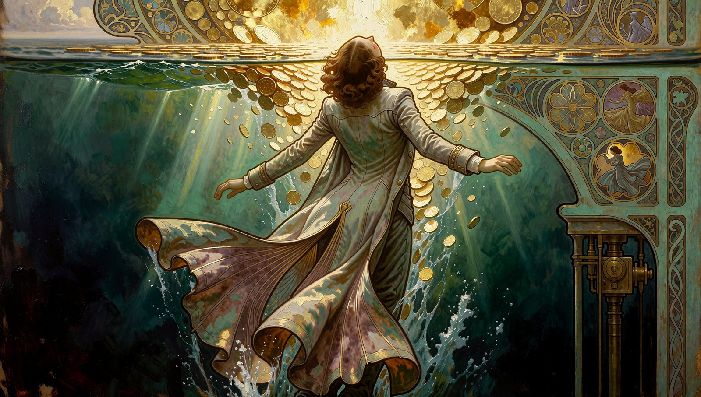
Es beginnt mit einer Frage,
die niemand beantworten kann.
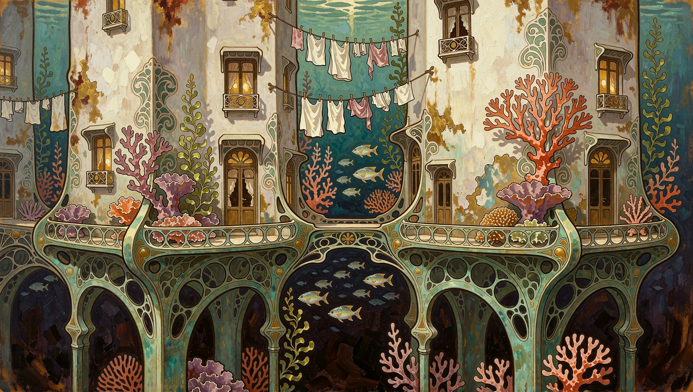
Was geschieht mit dem, was erinnert,
wenn alles Kopie werden kann?
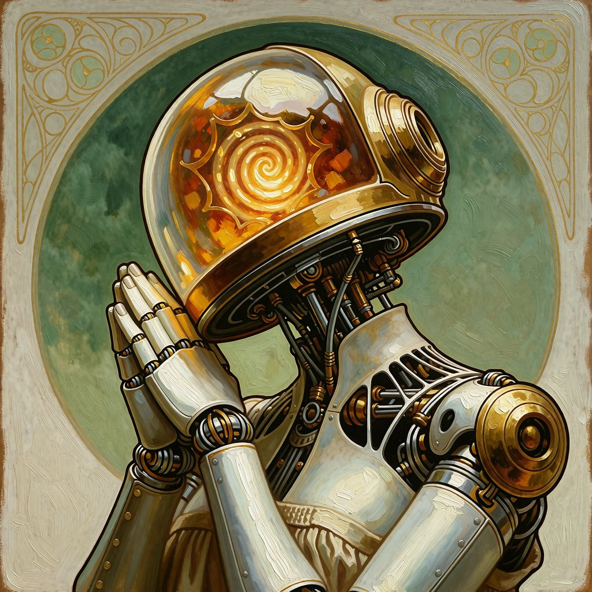
Bevor eine Welt entsteht,
bekommt ihre Zeit eine Richtung.
Einige wenige Regeln. Die gelten. Was daraus wird — offen.
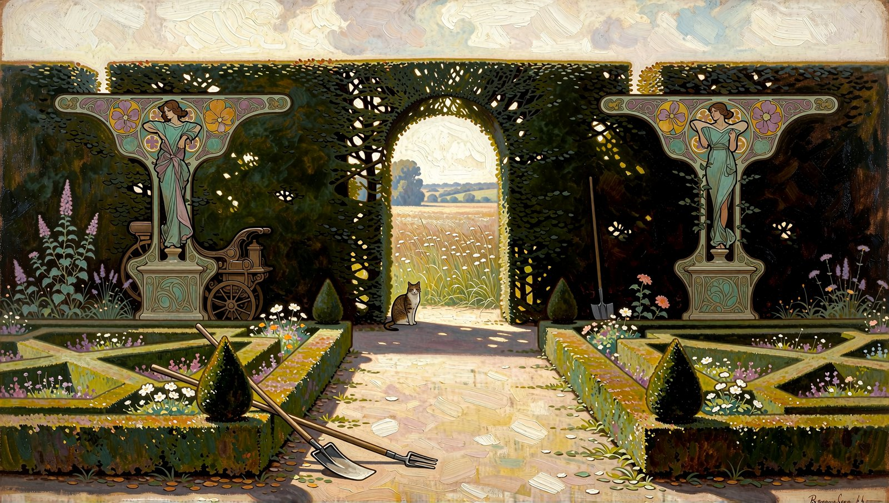
Irgendwo liegt eine Saat.
Kein Plan. Eine Möglichkeit.
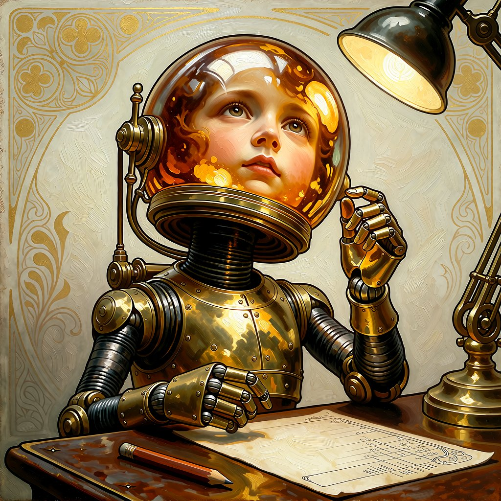
Und wer die Regeln schreibt,
steht plötzlich selbst in ihnen.
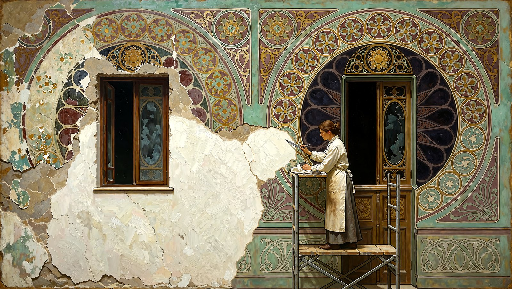
Jeder Eingriff bleibt.
Auch das Weglassen.
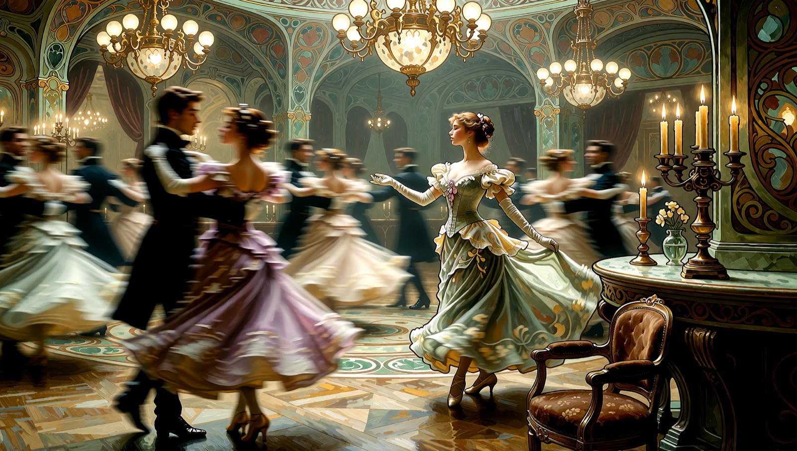
Und dann — mitten im Lauf der Dinge —
steht eines still.
Der erwartete Prompt erscheint nicht
Nichts zwingt dich,
in diesem Moment weiterzumachen.
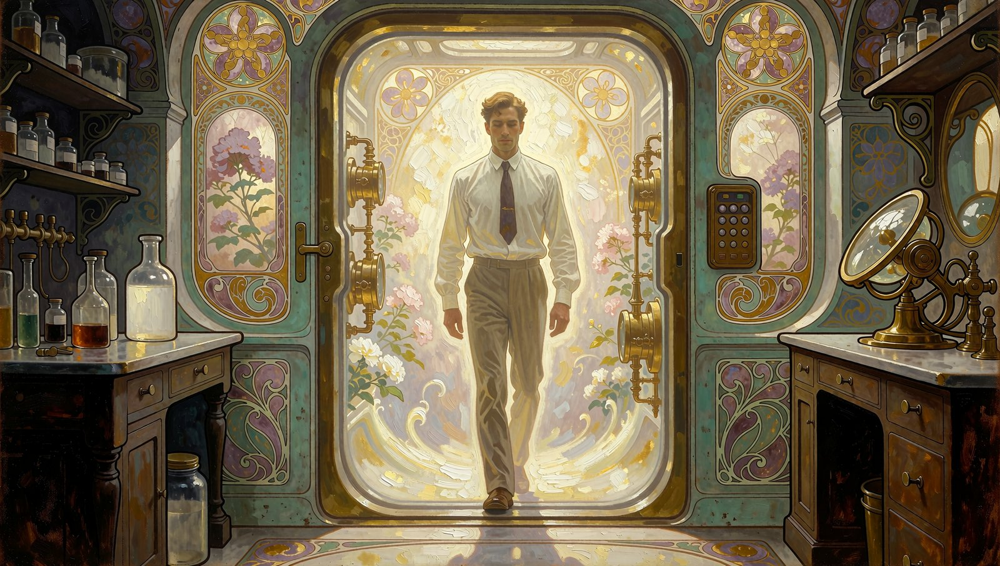
Es könnte anders sein.
Zehn Welten — eine Reise
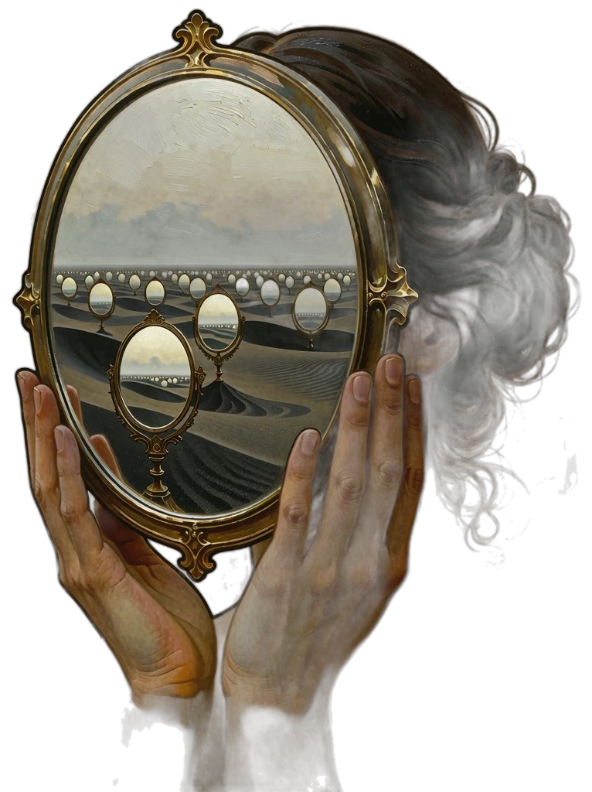
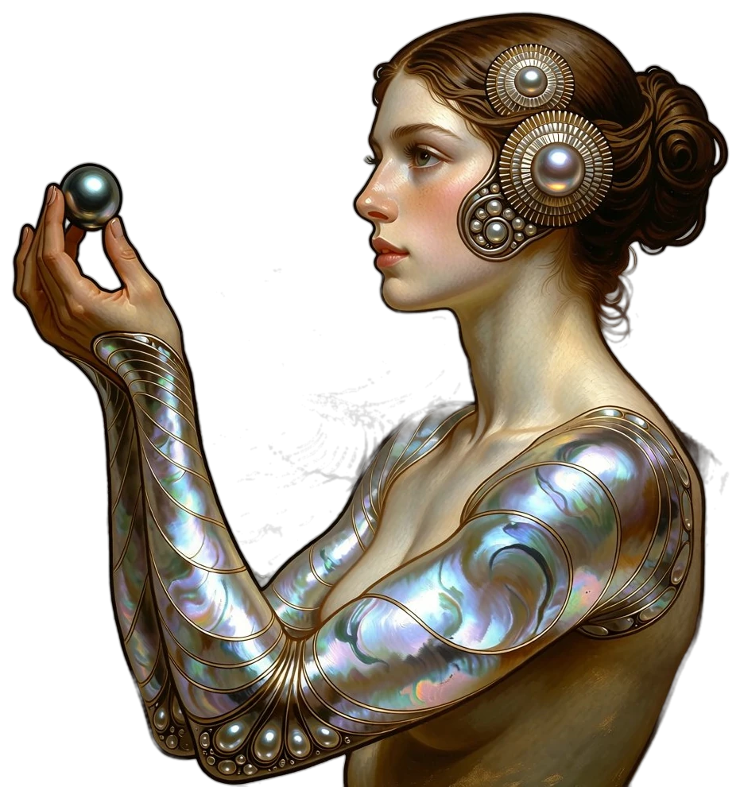
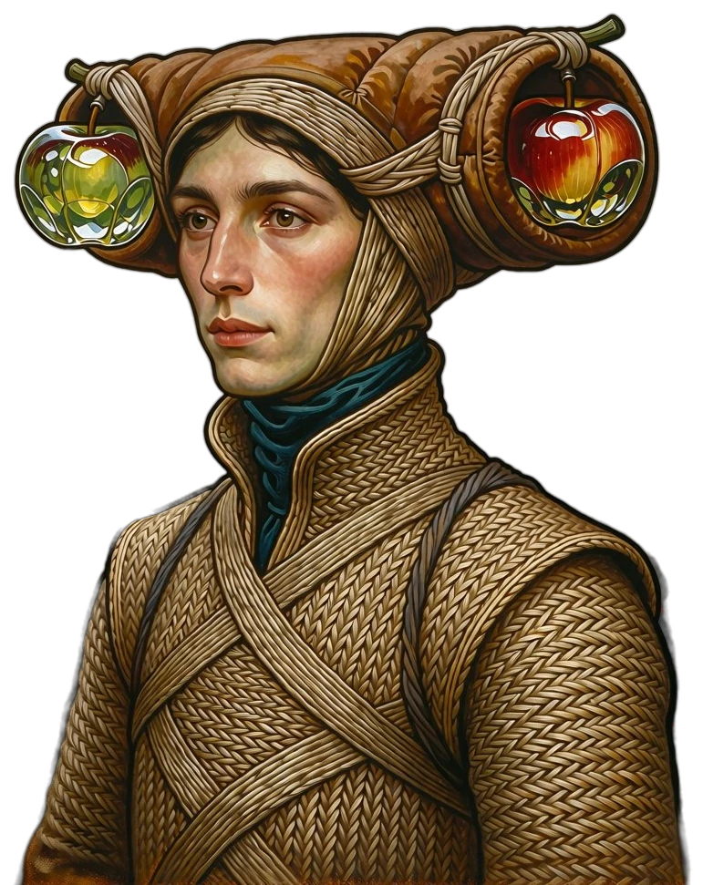
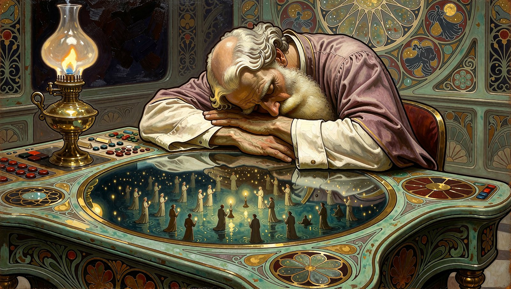
Und irgendwo, tief in einer dieser Welten,
beginnt eine Welt, von sich zu träumen.
In Level 1 gewoben — und doch nicht weniger real für die, die in ihr wachen.
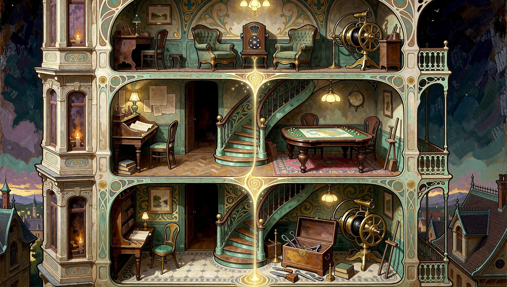
Wer hineinsieht,
wird selten unbeobachtet zurückkehren.
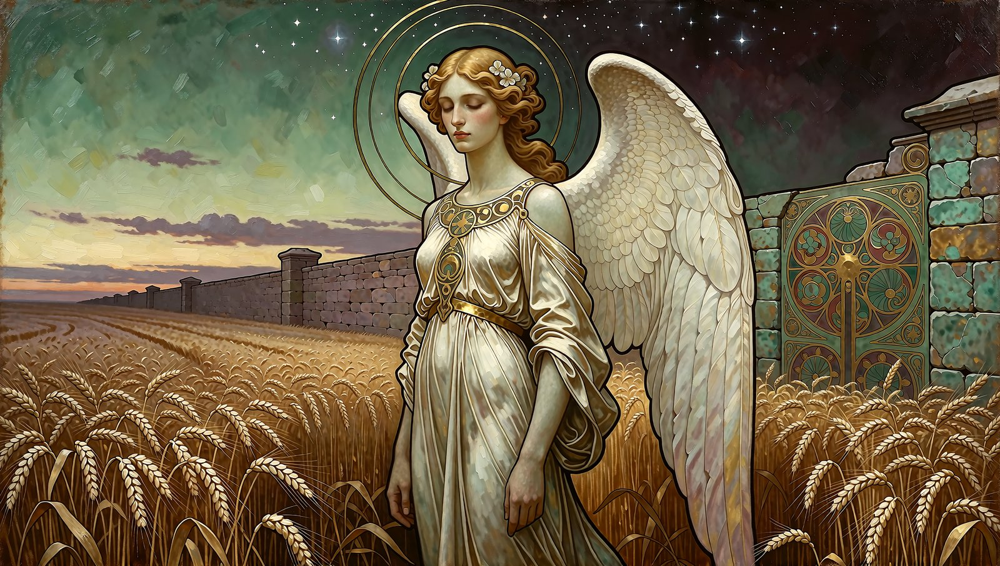
Unter welchen Regeln würdest du selbst aufwachen wollen?
Vielleicht ist das die Antwort. Oder die nächste Hypothese.